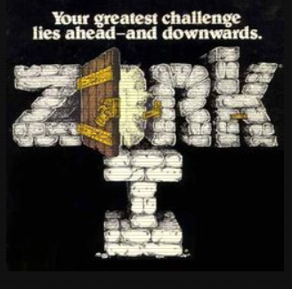

Down From the Top of Its Game: The Story of Infocom, Inc.
(excerpt from: http://web.mit.edu/6.933/www/Fall2000/infocom/infocom-paper.pdf)

The Birth of a Legend
The Infocom story starts in the early 1970s in MIT’s fledgling Laboratory for Computer Science (LCS). A small group within LCS, originally called the Dynamic Modeling (DM) group, worked to develop a LISP-derivative programming language called Muddle, or MDL. And, “in addition to its other accomplishments, [the DM group] was responsible for some famous games…Dave Lebling [a member of the group] was among those chiefly responsible (to blame?) for the existence of the game [Maze].”
Once the DM group had created MDL, they moved on to create libraries of software for the language, trying to supplant LISP as the programming language of choice. One such library was intended to provide programmers with robust methods for implementing persistent objects. It gave programmers a way of preserving the state of a computer program from one execution to the next. To demonstrate the use of persistent objects, Marc Blank and Tim Anderson of the DM group wrote a simple trivia game in MDL. It was their first foray into computer game development, but it paved the way for Infocom’s first commercial product: the legendary Zork.
The Creation of Zork
Around the same time that Tim Anderson and Mark Blank were creating their trivia game, researchers from Stanford University released the first computer adventure game, aptly titled Adventure. People were said to be addicted to this game, playing “for about two weeks straight.” The game had no graphics and had a simple command line interface. Nevertheless, several people at LCS and in the DM group became addicted to playing the game.
Eventually, Adventure players at LCS became dissatisfied with the game. The parser, which took user input from the command line and translated it into commands that the game could understand, could only handle two-word inputs (e.g. “go north”). Many players wanted to be able to input complex directives and extend the set of keywords. The game was also written and designed poorly. Players were often presented with text describing an object or place, but were then unable to do anything with the object. Being programmers, the DM group decided to write their own adventure game.
In 1977, a team of LCS students began writing what would become the legendary Zork in the MDL programming language. Marc Blank wrote some of the objects and Dave Lebling began work on the game’s parser. The bulk of the game, however, was written by Blank, Tim Anderson, and Bruce Daniels while Lebling was on vacation. Blank was said to be the “prime mover” in this effort, writing an estimated 60% of the code himself. Lebling returned from his vacation to do testing work on Zork, which was finished in 1979.
In response to the commonly asked question, “Where did the name Zork come from?”, Blank explained:
“Actually…[Zork is] just a nonsense word. There are all kinds of words like that that hackers tend to use—words like ‘frob.’ Frob means thingamajig, and it can be used as any part of speech. It’s a generic noun and verb. Cars are full of frob that get frobbed. That’s why we named the wizard in Zork II the Wizard of Frobozz. He’s forgotten all his spells, except for the ones that begin with the letter F.”
Zork ran on Digital Equipment’s PDP-10 mainframe and was open to any user with an account. Since anyone who could access the machine could get an account, soon people were logging into the server from all over the world. The machine was able to let six people play at one time; usually, all six slots were full. The first article on Zork appeared a scant two months after the last puzzles were added to it. It would be the first trickle in a massive wave of incredible publicity to come.
Zork: The Great Underground Empire
Just like Adventure, Zork had a very simple interface: a player’s screen consisted simply of text and a command prompt. Unlike Adventure, however, Zork had a more sophisticated English parser. The player could then enter natural language commands at the prompt, anything from the simple, “Go north” to the comparatively complex, “Hit the ugly troll with the double-bladed axe.” The system would then in turn return more text—room descriptions, results of actions, etc.
The parser sifted through an English sentence, looking for noun clauses, prepositions, adjectives, and other clues to “understand” the user’s input. It attempted to break down a sentence into three basic items: verb, direct object, and indirect object. In the example, “Hit the ugly troll with the double-bladed axe”, the verb is “hit”, the direct object is “troll”, and the indirect object is “axe”. The following shows a sample transcript from the game:
>EAST
The Troll Room
You are in a small room with passages off in all directions. Bloodstains and deep scratches (perhaps made by an axe) mar the walls.
A nasty-looking troll, brandishing a bloody axe, blocks all passages out of the room. Your sword has begun to glow very brightly.
> KILL TROLL WITH SWORD
A mighty blow, but it misses the troll by a mile. The axe gets you right in the side. Ouch!
Instead of providing the player with the blocky, pixilated graphics available at the time, Zork’s lush prose described a medieval-era underground world. Players didn’t see this world on the screen, but they could imagine it in their minds. They could wander around this world freely, interacting with many different parts of each room, until they solved the puzzles at hand, and in doing so, they would unearth the story buried deep beneath the game’s surface.
Infocom Takes Off
Around the time Infocom began, big, expensive mainframe computers dominated the market. In 1979, that all changed when Dan Bricklin and Bob Frankston released VisiCalc, the first electronic spreadsheet and “killer app” for the personal computer. People purchased personal computers just for the sole purpose of using VisiCalc. Apple, Commodore, Atari, IBM, and Radio Shack had a whole range of models available, but each one garnered a small percentage of the market.
Personal computers cost over a thousand dollars each, and owners tended to be wealthy and well educated. Doctors, businessmen, lawyers, and other professionals could afford the price tag. The owners of the personal computers also tended to enjoy reading—a factor that would prove critical to the success of Infocom’s games.
The emerging personal computer market presented a golden opportunity for Infocom, but its founders faced a difficult challenge: How could they make Zork, which barely ran on a PDP-10, work on comparatively tiny microcomputers?
Making Zork fit on personal computers
Berez and Blank spent one month in Pittsburgh together discussing the feasibility of porting the complex and addictive world of Zork to smaller computers. It was a daunting technical task—they would be faced with limitations on all fronts, from memory size to processor power. And to complicate matters, they would have to support multiple platforms, since there was no clear market leader in the home computer business.
Blank initially thought that compressing Zork to fit the stringent memory and code size limitations of a personal computer would be impossible. The mainframe version of Zork ran on a PDP-10 with 512 kilobytes of memory and required a megabyte of code. In contrast, the TRS-80 Model I and Apple II had 64 kilobytes of memory at most with an optional floppy drive that could hold 80 kilobytes. Motivated by Blank’s doubts, Berez felt there had to be a way to make Zork smaller. He looked at UCSD Pascal, a language used to compile Pascal to platform-independent byte-codes (called P-codes), which were then interpreted by a virtual machine. While UCSD Pascal made code portable, it would not make Zork much smaller. Taking the idea one step further, Berez came up with the idea of making a design for a virtual machine specifically designed for text-adventure games, which he called the Z-machine.
Berez and Blank sketched out the details of the Z-machine to convince themselves that it would allow Zork to run on a computer that had 32 kilobytes of memory and a floppy drive. They saw that they could minimize the code size by tailoring the machine’s instruction set for the specific operations of the game. In addition, Berez and Blank realized that it wasn’t absolutely necessary to keep all the program code loaded in main memory, thereby reducing the memory requirements. Instead, the Z-machine could leave the bulk of the code on disk and load certain sections into memory whenever the program called for it. This idea drove Berez and Blank to employ one of the earliest virtual memory managers for the personal computer.
The Z-machine was especially suited for games like Zork because its design revolved around an object tree structure representation. Objects represented the things in a game, such as rooms, items, players, enemies, and weapons. Furthermore, objects had attributes that described what they could do. For example, an object could be “takeable,” which meant that the player could carry it around the game. Each object also had parents, siblings, and children to represent their relationship to other objects. For example, suppose a game had a glass bottle and a knife in a kitchen. The kitchen would be the parent of the glass bottle and the knife, and the glass bottle would be the sibling of the knife. This hierarchical relationship made it simple to describe where objects resided.
The Z-machine made it easy to express adventure games compactly by providing instructions for common operations. The mainframe version of Zork duplicated code for tasks like moving objects from one place to another, checking objects for certain properties, modifying properties, testing for hierarchical relationships. In the Z-machine, these operations could be expressed in several bytes of code—a huge savings factor.
Several other techniques were used to make Zork even smaller. The Z-machine compressed text, which constituted a large portion of the data, by using a representation that required approximately five and a half bits per character instead of the usual eight. In addition, Infocom stripped out many unnecessary features of MDL, such as associative storage, and created a language called the Zork Implementation Language (ZIL). Realizing the mainframe version of Zork would still be too big to fit on a floppy, Lebling looked at a map of Zork and divided the game up into three sections. The latter two would be used for sequels to the original Zork.
With the Z-machine design completed, Berez and Blank began writing a two-stage compiler that would convert the high-level ZIL code first to assembly code and then to Z-machine byte-codes. Blank then wrote a Z-machine software emulator—which came to be known as a Z-machine Interpretive Program (ZIP)—for the DECsystem-20. In 1980, Scott Cutler, a member of the DM group who went on to work in New York, finished writing a ZIP for the TRS-80 Model I. And in 1981, working remotely from California, Bruce Daniels completed a ZIP for the Apple II.
The portability facilitated by the Z-machine design proved to be an important asset. The game files were stored as Z-machine byte codes, which could then be interpreted by a ZIP. To make all its software run on a platform, all Infocom had to do was write one ZIP. This was especially important because Atari, Apple, Commodore, IBM, NEC, Radio Shack, and other companies had models of personal computers out of the market. While the Apple II constituted over 50% of the market by 1982, the other platforms shared the remaining percentage.
Infocom released Zork for the TRS-80 Model I in 1980, beginning its entry into the software entertainment industry. In the beginning, sales were slow. The TRS-80 version sold over 1500 copies, but Zork really became a hit after the Apple II version sold over 6000 copies. With two supported platforms and more on the way, Infocom began to take off.
The Lure of Interactive Fiction
Infocom’s games flew off the shelves. In 1983, they dominated the Softsel bestseller list, the main index of software sales. Zork claimed the top spot, ahead of graphical games like Lode Runner and Zaxxon. In addition, Deadline, Zork II, and Zork III, Planetfall, Witness, Enchanter, Suspended, Starcross, and Infidel all ranked in the top 40 as well.
The “Implementor’s Creed” and the well-structured system of game development succeeded in creating a unifying vision for Infocom games. Buyers of Infocom games could be assured that they were purchasing an exciting, engaging experience. The prose in the games described vivid places and lively characters.
One of the best examples of a character that illustrates why people enjoyed Infocom’s games was Floyd the Robot in Planetfall. In Planetfall, the player starts out onboard the Stellar Patrol Ship Feinstein. He eventually befriends Floyd the Robot, who proves to be a bubbly and loyal sidekick. To win the game, the player must somehow pass through a room full of killer mutants and obtain a card. Floyd takes center stage:
“Looks dangerous in there,” says Floyd. “I don’t think you should go inside.” He peers in again.
“We’ll need card there to fix computer. Hmmm... I know! Floyd will get card. Robots are tough. Nothing can hurt robots.
You open the door, then Floyd will rush in. Then you close door. When Floyd knocks, open door again. Okay? Go!”
Floyd’s voice trembles slightly as he waits for you to open the door.
Players actually cried after learning of Floyd’s death. Amazed by the level of emotion evoked by Infocom’s games, one reporter wrote, “Floyd was a good robot. He was helpful. He was courageous. He was fun-loving. Your friend is gone and you’re alone. How do you feel? You don’t feel like that very often. Maybe after you read Charlotte’s Web. Maybe when they shot Bambi’s mother. Maybe when Raskolnikov got religion in the Siberian slave labor camp. But this scene is from a computer game. A game!”
Infocom managed to get its users addicted by allowing them to play a well thought out role, while concurrently solving puzzles, all on an exciting and new technological platform. The worlds created by Infocom were limited only by the players’ imaginations. As one reviewer described it, “The underground empire [of Zork] can be here, right under you. You almost feel it pulsing.”
The attraction of Infocom games was multi-faceted. At times, the games could bring the simple pleasure of reading a light, fast-paced novel, whose course could be affected by the reader. Other times, the games provided the intellectual satisfaction of solving a complicated logic puzzle. Without an image of the protagonist, players could identify with the main character and even imagining themselves in the role. A typical Infocom game allowed the user to feel as though he or she were living the life of a police detective, medieval hero, or space ranger.
People with many different interests enjoyed Infocom’s games. The games enticed brilliant programmers and illustrious computer science researchers, such as John McCarthy, the inventor of LISP. Infocom’s writers even had professional novelists, such as the science-fiction author Larry Nevin, hooked. Douglas Adams, the author of The Hitchhiker’s Guide to the Galaxy loved the games so much that he insisted that he would only work with Infocom to make a computer game version of his novel. And comedian and actor Robin Williams was said to be so addicted that he would call Marc Blank in the middle of the night, begging for hints.
Infocom’s games were extremely well written, and they provided uses with hours of enjoyment. But to claim this was the only reason for the success of their games is to tell only half of the story. The other half of the story lies in just how Infocom got people to buy their games in the first place: Infocom’s unique publishing and marketing strategies were crucial factors in the success of their games.
Now that you have read the history of the Infocom Inc. history, check out the Zork adventure games below. These are the original text based adventure games developed by Infocom Inc. Compare these games to the Scott Adams text adventure games that you encountered earlier. You will find them to be much more adept at handling your input commands. Notice also the depth of the text descriptions in some of storyline elements. It is a much richer experience.
Try some of them out at:
Alternative links (may not work at school):